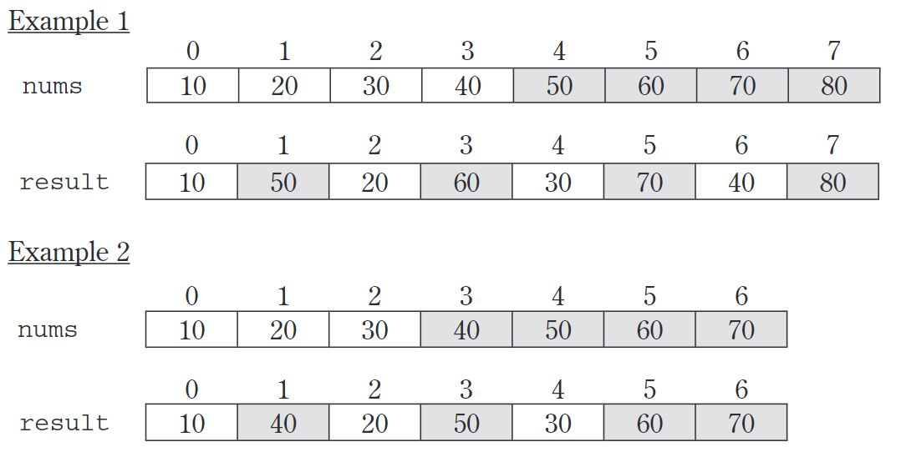

1. AP计算机示例考题：多项选择
Consider the following code segment.
for (int k = 0; k < 20; k = k + 2){
if (k % 3 == 1)
{
System.out.print(k + " ");
}
}
What is printed as a result of executing the code segment?
4 16
4 10 16
0 6 12 18
1 4 7 10 13 16 19
0 2 4 6 8 10 12 14 16 18
Consider the following code segment.
List animals = new ArrayList();
animals.add("dog");
animals.add("cat");
animals.add("snake");
animals.set(2, "lizard");
animals.add(1, "fish");
animals.remove(3);
System.out.println(animals);
What is printed as a result of executing the code segment?
[dog, fish, cat]
[dog, fish, lizard]
[dog, lizard, fish]
[fish, dog, cat]
The code throws an ArrayIndexOutOfBoundsException exception.
Consider the following method.
public static void mystery(List<Integer> nums) {
for (int k = 0; k < nums.size(); k++) {
if (nums.get(k).intValue() == 0) {
nums.remove(k);
}
}
}
Assume that a List values initially contains the following Integer values[0, 0, 4, 2, 5, 0, 3, 0]
What will values contain as a result of executing mystery(values)?
[0, 0, 4, 2, 5, 0, 3, 0]
[4, 2, 5, 3]
[0, 0, 0, 0, 4, 2, 5, 3]
[0, 4, 2, 5, 3]
The code throws an ArrayIndexOutOfBoundsException exception.
At a certain high school students receive letter grades based on the following scale.
| Integer Score | Letter Grade |
|---|---|
| 93 or above | A |
| From 84 to 92 inclusive | B |
| From 75 to 83 inclusive | C |
| Below 75 | F |
Which of the following code segments will assign the correct string to grade for a given integer score?
I.
if (score >= 93) grade = "A";
if (score >= 84 && score <= 92) grade = "B";
if (score >= 75 && score <= 83) grade = "C";
if (score < 75) grade = "F";
II.
if (score >= 93) grade = "A";
if (84 <= score <= 92) grade = "B";
if (75 <= score <= 83) grade = "C";
if (score < 75) grade = "F";
III.
if (score >= 93) grade = "A";
else if (score >= 84) grade = "B";
else if (score >= 75) grade = "C";
else grade = "F";
II only
III only
I and II only
I and III only
I, II, and III
Consider the following output.1 1 1 1 1
2 2 2 2
3 3 3
4 4
5
Which of the following code segments will produce this output?
for (int j = 1; j <= 5; j++) {
for (int k = 1; k <= 5; k++) {
System.out.print(j + " ");
}
System.out.println();
}
for (int j = 1; j <= 5; j++) {
for (int k = 1; k <= j; k++) {
System.out.print(j + " ");
}
System.out.println();
}
for (int j = 1; j <= 5; j++) {
for (int k = 5; k >= 1; k--) {
System.out.print(j + " ");
}
System.out.println();
}
for (int j = 1; j <= 5; j++) {
for (int k = 5; k >= j; k--) {
System.out.print(j + " ");
}
System.out.println();
}
for (int j = 1; j <= 5; j++) {
for (int k = j; k <= 5; k++) {
System.out.print(k + " ");
}
System.out.println();
}
A car dealership needs a program to store information about the cars for sale. For each car, they want to keep track of the following information: number of doors (2 or 4), whether the car has air conditioning, and its average number of miles per gallon. Which of the following is the best object-oriented program design?
Use one class, Car, with three instance variables: int numDoors, boolean hasAir, and double milesPerGallon.
Use four unrelated classes: Car, Doors, AirConditioning, and MilesPerGallon.
Use a class Car with three subclasses: Doors, AirConditioning, and MilesPerGallon.
Use a class Car, with a subclass Doors, with a subclass AirConditioning, with a subclass MilesPerGallon.
Use three classes: Doors, AirConditioning, and MilesPerGallon, each with a subclass Car.
Consider the following declarations.
public interface Shape {
int isLargerThan(Shape other);
// Other methods not shown
}
public class Circle implements Shape {
// Other methods not shown
}
Which of the following method headings of isLargerThan can be added to the declaration of the Circle class so that it will satisfy the Shape interface?
I. public int isLargerThan(Shape other)
II. public int isLargerThan(Circle other)
III. public boolean isLargerThan(Object other)
I only
II only
III only
I and II only
I, II, and III
public class TimeRecord {
private int hours;
private int minutes; // 0 < minutes < 60
/** Constructs a TimeRecord object.
* @param h the number of hours
* Precondition: h > 0
* @param m the number of minutes
* Precondition: 0 < m < 60 */
public TimeRecord(int h, int m) {
hours = h;
minutes = m;
}
/** @return the number of hours */
public int getHours() { /* implementation not shown */ }
/** @return the number of minutes
* Postcondition: 0 < minutes < 60
*/
public int getMinutes() { /* implementation not shown */ }
/** Adds h hours and m minutes to this TimeRecord.
* @param h the number of hours
* Precondition: h > 0
* @param m the number of minutes
* Precondition: m > 0
*/
public void advance(int h, int m) {
hours = hours + h;
minutes = minutes + m;
/* missing code */
}
// Other methods not shown
}
Which of the following can be used to replace /* missing code */ so that advance will correctly update the time?
minutes = minutes % 60;
minutes = minutes + hours % 60;
hours = hours + minutes / 60;
minutes = minutes % 60;
hours = hours + minutes % 60;
minutes = minutes / 60;
hours = hours + minutes / 60;
Consider the following declaration that appears in a class other than TimeRecord.TimeRecord[] timeCards = new TimeRecord[100];
Assume that timeCards has been initialized with TimeRecord objects. Consider the following code segment that is intended to compute the total of all the times stored in timeCards.
TimeRecord total = new TimeRecord(0,0);
for (int k = 0; k < timeCards.length; k++)
{
/* missing expression */ ;
}
Which of the following can be used to replace /* missing expression */ so that the code segment will work as intended?
timeCards[k].advance()
total += timeCards[k].advance()
total.advance(timeCards[k].hours, timeCards[k].minutes)
total.advance(timeCards[k].getHours(), timeCards[k].getMinutes())
timeCards[k].advance(timeCards[k].getHours(), timeCards[k].getMinutes())
Consider the following instance variable and method.private int[] arr;
/** Precondition: arr contains no duplicates;
* the elements in arr are in ascending order.
* @param low an int value such that 0 <= low <= arr.length
* @param high an int value such that low - 1 <= high < arr.length
* @param num an int value */
public int mystery(int low, int high, int num) {
int mid = (low + high) / 2;
if (low > high) {
return low;
} else if (arr[mid] < num) {
return mystery(mid + 1, high, num);
} else if (arr[mid] > num) {
return mystery(low, mid− 1, num);
} else // arr[mid] == num
{
return mid;
}
}
What is returned by the callmystery(0, arr.length − 1, num)?
The number of elements in arr that are less than num
The number of elements in arr that are less than or equal to num
The number of elements in arr that are equal to num
The number of elements in arr that are greater than num
The index of the middle element in arr
Consider the following instance variable nums and method findLongest with line numbers added for reference. Method findLongest is intended to find the longest consecutive block of the value target occurring in the array nums; however,findLongest does not work as intended.
For example, if the array nums contains the values [7, 10, 10, 15, 15, 15, 15, 10, 10, 10, 15, 10, 10], the callfindLongest(10) should return 3, the length of the longest consecutive block of 10s.
private int[] nums;
public int findLongest(int target)
{
int lenCount = 0;
int maxLen = 0;
for (int val : nums)
{
if (val == target)
{
lenCount++;
}
else
{
if (lenCount > maxLen)
{
maxLen = lenCount;
}
}
}
if (lenCount > maxLen)
{
maxLen = lenCount;
}
return maxLen;
The method findLongest does not work as intended. Which of the following best describes the value returned by a call to findLongest?
It is the length of the shortest consecutive block of the value target in nums.
It is the length of the array num
It is the number of occurrences of the value target in nums.
It is the length of the first consecutive block of the value target in nums.
It is the length of the last consecutive block of the value target in nums.
Which of the following changes should be made so that method findLongest will work as intended?
Insert the statement lenCount = 0; between lines 2 and 3.
Insert the statement lenCount = 0; between lines 8 and 9.
Insert the statement lenCount = 0; between lines 10 and 11.
Insert the statement lenCount = 0; between lines 11 and 12.
Insert the statement lenCount = 0; between lines 12 and 13.
Consider the following instance variable and method.
private int[] numbers;
/** Precondition: numbers contains int values in no particular order.
*/
public int mystery(int num) {
for (int k = numbers.length - 1; k >= 0; k−−) {
if (numbers[k] < num) {
return k;
}
}
return -1;
}
Which of the following best describes the contents of numbers after the following statement has been executed?int m = mystery(n);
All values in positions 0 through m are less than n.
All values in positions m+1 through numbers.length-1 are less than n.
All values in positions m+1 through numbers.length-1 are greater than or equal to n.
The smallest value is at position m.
The largest value that is smaller than n is at position m.
Consider the following method.
/** @param x an int value such that x >= 0
*/
public void mystery(int x) {
System.out.print(x % 10);
if ((x / 10) != 0) {
mystery(x / 10);
}
System.out.print(x % 10);
}
Which of the following is printed as a result of the call mystery(1234)?
1234
4321
12344321
43211234
Many digits are printed due to infinite recursion.
Consider the following two classes.
public class Dog {
public void act() {
System.out.print("run ");
eat();
}
public void eat() {
System.out.print("eat ");
}
}
public class UnderDog extends Dog {
public void act() {
super.act();
System.out.print("sleep ");
}
public void eat() {
super.eat();
System.out.print("bark ");
}
}
Assume that the following declaration appears in a class other than Dog.Dog fido = new UnderDog();
What is printed as a result of the call fido.act()?
run eat
run eat sleep
run eat sleep bark
run eat bark sleep
Many digits are printed due to infinite recursion.
Consider the following recursive method.
public static int mystery(int n) {
if (n <= 1) {
return 0;
} else {
return 1 + mystery(n / 2);
}
}
Assuming that k is a nonnegative integer and m=2^k, what value is returned as a result of the call mystery(m) ?
0
k
m
m/2+1
k/2+1
Consider the following instance variable and method.
private int[] array;
/** Precondition: array.length > 0
*/
public int checkArray() {
int loc = array.length / 2;
for (int k = 0; k < array.length; k++) {
if (array[k] > array[loc]) {
loc = k;
}
}
return loc;
}
Which of the following is the best postcondition for checkArray?
Returns the index of the first element in array array whose value is greater than array[loc]
Returns the index of the last element in array array whose value is greater than array[loc]
Returns the largest value in array array
Returns the index of the largest value in array array
Returns the index of the largest value in the second half of array array
Consider the following methods.
public void changer(String x, int y) {
x = x + "peace";
y = y * 2;
}
public void test() {
String s = "world";
int n = 6;
changer(s, n);
/* End of method */
}
When the call test() is executed, what are the values of s and n at the point indicated by /* End of method */?
world 6
worldpeace 6
world 12
worldpeace 12
peace 12
Consider the following code segment.
int[][] mat = new int[3][4];
for (int row = 0; row < mat.length; row++) {
for (int col = 0; col < mat[0].length; col++) {
if (row < col) {
mat[row][col] = 1;
} else if (row == col) {
mat[row][col] = 2;
} else {
mat[row][col] = 3;
}
}
}
What are the contents of mat after the code segment has been executed?
{ {2, 1, 1}, {3, 2, 1}, {3, 3, 2}, {3, 3, 3} }
{ {2, 3, 3}, {1, 2, 3}, {1, 1, 2}, {1, 1, 1} }
{ {2, 3, 3, 3}, {1, 2, 3, 3}, {1, 1, 2, 3} }
{ {2, 1, 1, 1}, {3, 2, 1, 1}, {3, 3, 2, 1} }
{ {1, 1, 1, 1}, {2, 2, 2, 2}, {3, 3, 3, 3} }
Consider the following method.
/** Precondition: arr contains only positive values.
*/
public static void doSome(int[] arr, int lim) {
int v = 0;
int k = 0;
while (k < arr.length && arr[k] < lim) {
if (arr[k] > v) {
v = arr[k]; /* Statement S */
}
k++; /* Statement T */
}
}
Assume that doSome is called and executes without error. Which of the following are possible combinations for the value of lim, the number of times Statement S is executed, and the number of times Statement T is executed?
Value of lim |
Executions of Statement S | Executions of Statement T | |
|---|---|---|---|
| I. | 5 | 0 | 5 |
| II. | 7 | 4 | 9 |
| III. | 3 | 5 | 2 |
I only
II only
III only
I and III only
II and III only
Consider the following instance variable, arr, and incomplete method, partialSum. The method is intended to return an integer array sum such that for all k, sum[k] is equal to arr[0] + arr[1] + ... + arr[k]. For instance, if arr contains the values { 1, 4, 1, 3 }, the array sum will contain the values { 1, 5, 6, 9 }.
private int[] arr;
public int[] partialSum() {
int[] sum = new int[arr.length];
for (int j = 0; j < sum.length; j++) {
sum[j] = 0;
}
/* missing code */
return sum;
}
The following two implementations of /* missing code */ are proposed so that partialSumwill work as intended.
Implementation 1
for (int j = 0; j < arr.length; j++) {
sum[j] = sum[j - 1] + arr[j];
}
Implementation 2
for (int j = 0; j < arr.length; j++) {
for (int k = 0; k <= j; k++) {
sum[j] = sum[j] + arr[k];
}
}
Which of the following statements is true?
Both implementations work as intended, but implementation 1 is faster than implementation 2.
Both implementations work as intended, but implementation 2 is faster than implementation 1.
Both implementations work as intended and are equally fast.
Implementation 1 does not work as intended, because it will cause an ArrayIndexOutOfBoundsException.
Implementation 2 does not work as intended, because it will cause an ArrayIndexOutOfBoundsException.
Consider the following declaration for a class that will be used to represent points in the xy-coordinate plane.
public class Point {
private int x; // x-coordinate of the point
private int y; // y-coordinate of the point
public Point() {
x = 0;
y = 0;
}
public Point(int a, int b) {
x = a;
y = b;
} // Other methods not shown
}
The following incomplete class declaration is intended to extend the above class so that points can be named.
public class NamedPoint extends Point {
private String name; // name of point
// Constructors go here
// Other methods not shown
}
Consider the following proposed constructors for this class.
I.
public NamedPoint() {
name = "";
}
II.
public NamedPoint(int d1, int d2, String pointName) {
x = d1;
y = d2;
name = pointName;
}
III.
public NamedPoint(int d1, int d2, String pointName) {
super(d1, d2);
name = pointName;
}
Which of these constructors would be legal for the NamedPoint class?
I only
II only
III only
I and III only
II and III only
Consider a shuffle method that is intended to return a new array that contains all the elements from nums, but in a different order. Let n be the number of elements in nums. The shuffle method should alternate the elements from nums[0] ... nums[n / 2 – 1] with the elements from nums[n / 2] ... nums[n – 1], as illustrated in the following examples.

The following implementation of the shuffle method does not work as intended.
public static int[] shuffle(int[] nums) {
int n = nums.length;
int[] result = new int[n];
for (int j = 0; j < n / 2; j++) {
result[j * 2] = nums[j];
result[j * 2 + 1] = nums[j + n / 2];
}
return result;
}
Which of the following best describes the problem with the given implementation of the shuffle method?
Executing shuffle may cause an ArrayIndexOutOfBoundsException.
The first element of the returned array (result[0]) may not have the correct value.
The last element of the returned array (result[result.length − 1]) may not have the correct value.
One or more of nums[0] ... nums[nums.length / 2 − 1] may have been copied to the wrong position(s) in the returned array.
One or more of nums[nums.length/2] ... nums[nums.length − 1] may have been copied to the wrong position(s) in the returned array.
Consider the following Util class, which contains two methods. The completed sum1D method returns the sum of all the elements of the 1-dimensional array a.The incomplete sum2D method is intended to return the sum of all the elements of the 2-dimensional array m.
public class Util {
/** Returns the sum of the elements of the 1-dimensional array a */
public static int sum1D(int[] a) {
/* implementation not shown */
}
/** Returns the sum of the elements of the 2-dimensional array m */
public static int sum2D(int[][] m) {
int sum = 0;
/* missing code */
return sum;
}
}
Assume that sum1D works correctly. Which of the following can replace /missing code/ so that the sum2D method works correctly?
I.
for (int k = 0; k < m.length; k++) {
sum += sum1D(m[k]);
}
II.
for (int[] row: m) {
sum += sum1D(row);
}
III.
for (int[] row: m) {
for (int v: row) {
sum += v;
}
}
I only
II only
I and II only
II and III only
I, II and III
The following sort method correctly sorts the integers in elements into ascending order.
public static void sort(int[] elements)
{
for (int j = 0; j < elements.length - 1; j++)
{
int index = j;
for (int k = j + 1; k < elements.length; k++)
{
if (elements[k] < elements[index])
{
index = k;
}
}
int temp = elements[j];
elements[j] = elements[index];
elements[index] = temp;
}
}
Which of the following changes to the sort method would correctly sort the integers in elements into descending order?
I. Replace line 9 with:
if (elements[k] > elements[index])
II. Replace lines 15-17 with:
int temp = elements[index];
elements[index] = elements[j];
elements[j] = temp;
III. Replace line 3 with:
for (int j = elements.length - 1; j > 0; j--)
and replace line 7 with:
for (int k = 0; k < j; k++)
I only
II only
I and II only
I and III only
I, II and III